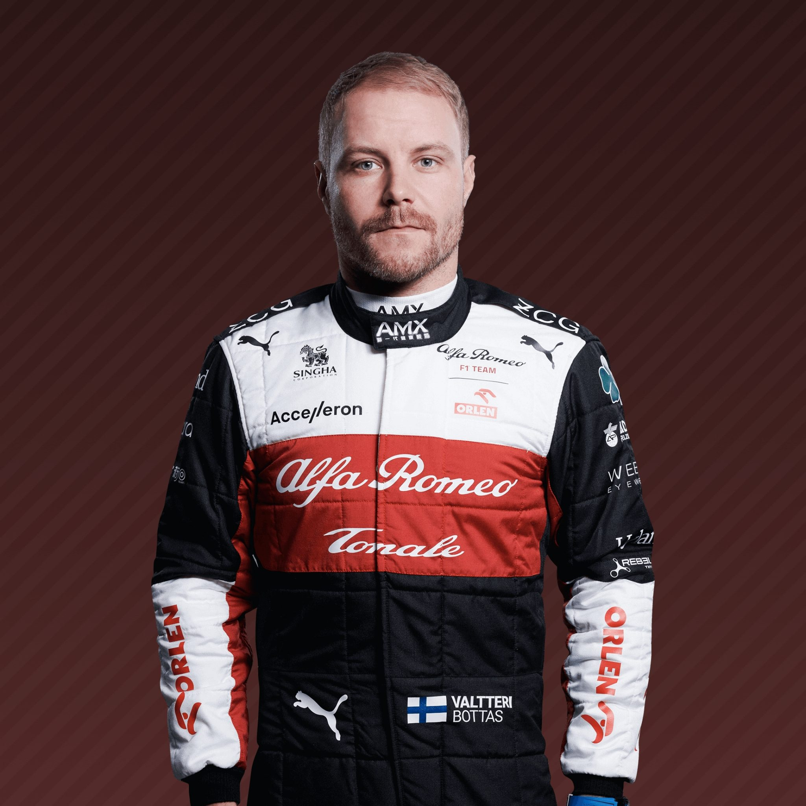
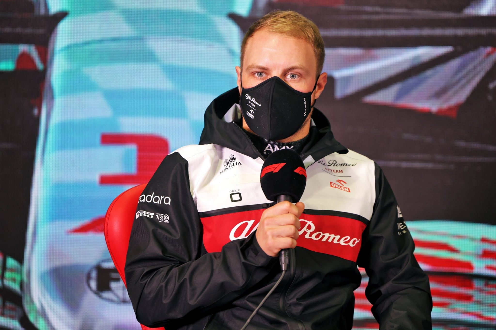
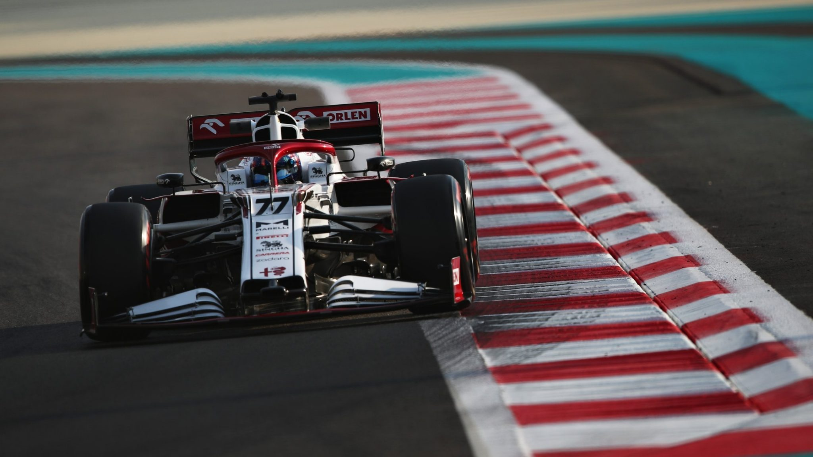
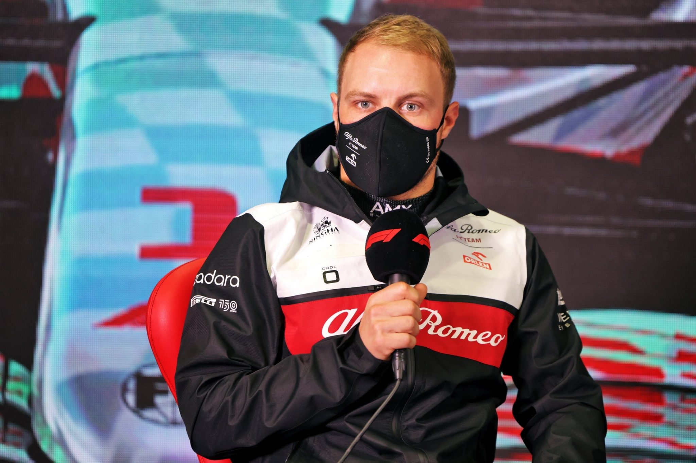
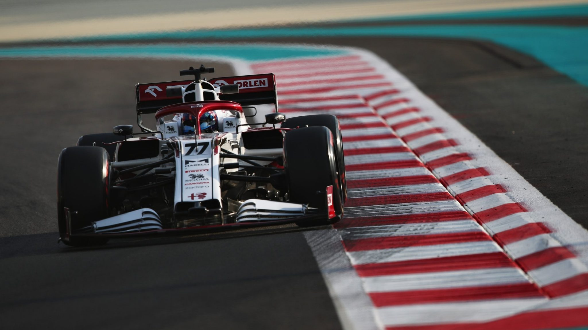
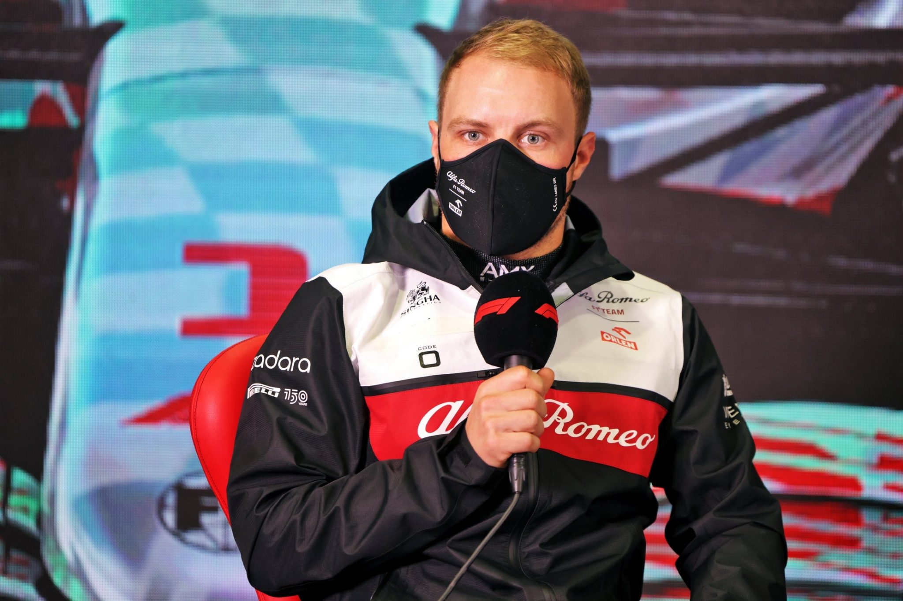
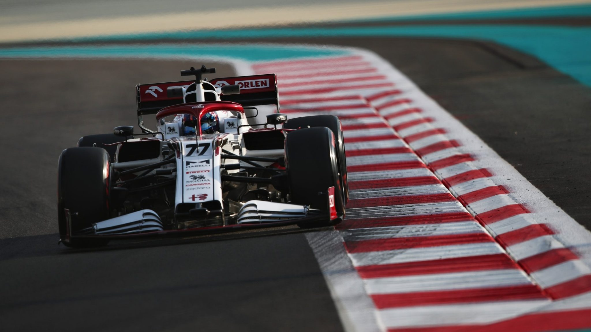

Learning his craft on Finnish roads of ice and snow, he was born to be a Grand Prix racer.
Bottas explains that if you can drive on the frozen roads of his homeland then you can drive anywhere.
Then there’s the Finnish mentality –reserved, diligent and calm the fast lane of F1 doesn’t faze him.
Making his F1 debut with Williams in 2013, Bottas soon became part of the family.
Points and podiums followed with the reliable racer even amassing the most points without a win, a record he resented but that showcased his ability.
The fact the Finn was such a points machine saw him suddenly promoted to the most coveted seat in F1
Nico Rosberg’s vacant championship-winning seat at Mercedes.
Bottas blossomed at the Silver Arrows in 2017, unleashing his pace to clock up personal pole positions and victories
as well as a team championship for the famous Mercedes marque alongside Lewis Hamilton.
He even tied with Hamilton and Sebastian Vettel with 13 podiums.
For a shy guy, it brought a confidence boost and a new swagger – albeit in a very demur Finnish fashion.
He would need all that confidence in 2018 – a season Bottas described as his worst in F1, as he took zero wins to Hamilton’s 11.
That, though, was a reflection more of his team mate’s brilliance than of any shortcomings on his own part.
Bottas stepped it up a level in 2019, four victories securing a convincing second in the championship behind Hamilton,
but that dropped to two wins to his team mate's 11 in 2020 and then just one in 2021, prompting Mercedes to drop him after five seasons.
For 2022 he starts a new chapter in his F1 career, replacing compatriot Kimi Raikkonen to lead an all-new line-up at Alfa Romeo,
where he is charged with taking Chinese rookie Zhou Guanyu under his wing.
 



| Team | Alfa Romeo |
|---|---|
| Country | Finland |
| Podiums | 67 |
| Points | 1785 |
| Grand Prix entered | 198 |
| World Championships | N/A |
| Highest race finish | 1 (x10) |
| Highest grid position | 1 |
| Date of birth | 28/08/1989 |
| Place of birth | Nastola, Finland |
Biography
Learning his craft on Finnish roads of ice and snow, he was born to be a Grand Prix racer.
Bottas explains that if you can drive on the frozen roads of his homeland then you can drive anywhere.
Then there’s the Finnish mentality –reserved, diligent and calm the fast lane of F1 doesn’t faze him.
Making his F1 debut with Williams in 2013, Bottas soon became part of the family.
Points and podiums followed with the reliable racer even amassing the most points without a win, a record he resented but that showcased his ability.
The fact the Finn was such a points machine saw him suddenly promoted to the most coveted seat in F1
Nico Rosberg’s vacant championship-winning seat at Mercedes.
Bottas blossomed at the Silver Arrows in 2017, unleashing his pace to clock up personal pole positions and victories
as well as a team championship for the famous Mercedes marque alongside Lewis Hamilton.
He even tied with Hamilton and Sebastian Vettel with 13 podiums.
For a shy guy, it brought a confidence boost and a new swagger – albeit in a very demur Finnish fashion.
He would need all that confidence in 2018 – a season Bottas described as his worst in F1, as he took zero wins to Hamilton’s 11.
That, though, was a reflection more of his team mate’s brilliance than of any shortcomings on his own part.
Bottas stepped it up a level in 2019, four victories securing a convincing second in the championship behind Hamilton,
but that dropped to two wins to his team mate's 11 in 2020 and then just one in 2021, prompting Mercedes to drop him after five seasons.
For 2022 he starts a new chapter in his F1 career, replacing compatriot Kimi Raikkonen to lead an all-new line-up at Alfa Romeo,
where he is charged with taking Chinese rookie Zhou Guanyu under his wing.
Gallery

